UX/UI-разбор, сверка с брендбуком 2025 и предложения по редизайну
Объектfrontside.ru
СтадияАудит · этап 1
Охват21 страница
Экраны1920, 1440, 390 px
АудиторияАрхитекторы
Дата01.10.2026
00
Коротко
У сайта крепкая основа: широкий каталог, реальные построенные объекты, раздел документов и узнаваемый фирменный стиль. Сайт развивался поэтапно, и со временем в нём накопились расхождения: разделы оформлены по разным шаблонам, а инструменты брендбука — фирменные шрифты, модульная система, паттерн — применены не полностью.
Для архитекторов, основной аудитории, это особенно заметно: поставщика они оценивают по тем же критериям, что и собственный проект, — по точности деталей, качеству изображений и удобству работы с технической информацией.
Большинство замечаний касается технической реализации и решается точечно: исходные фото в полном разрешении, подключение фирменного шрифта, исправление блока телефона, единая сетка. Эти задачи можно закрыть на первом этапе, не дожидаясь редизайна. Следующий шаг — единая дизайн-система на основе брендбука и переработка трёх ключевых шаблонов: главной, карточки продукта и проектов. Это сделает сайт рабочим инструментом архитектора и раскроет сильные продукты компании — ARTVISION, UNIQUE 2.0, ARTLINE и LED.
Заменить растянутые фотоФото первого экрана — файл 675 px, растянутый на 1920 (Э1).
Одна дизайн-система вместо двухСвести шрифт, шапку, сетку и кнопки к общим правилам на основе брендбука (Д1–Д5, глава 1.2).
Портфолио — в главное меню и с даннымиВынести проекты в главное меню и дополнить данными, важными для архитектора (С1, С9).
Инструменты для проектировщикаBIM, DWG, палитры и образцы прямо в карточке продукта (С8).
5,2 сдо появления главного изображения (один замер)
1файл в «BIM-библиотеке»
4написания названия компании на главной
Аудит сайта frontside.ru Коротко
Часть 1
Диагноз
Как сайт выглядит глазами архитектора и что в нём есть ценного.
1.1
Оценка визуала
Шкала из пяти, где 3 — нормальный средний уровень рынка. Это экспертная оценка, а не измерение.
Целостность
2/5
Разделы оформлены по-разному: у них свои шрифты, шапки, кнопки и фильтры.
Преемственность
2/5
Фильтры сделаны тремя способами, заголовки второго уровня — тремя стилями, аккордеоны — двумя.
Новизна
2/5
Слайдер, коллаж плашек, аккордеоны и сетка сертификатов — распространённые решения прошлых лет, сегодня они уже не выделяют бренд. Новые продукты (ARTVISION, UNIQUE 2.0, LED) заслуживают более яркой подачи.
Креативность
1,5/5
Основной сайт пока не использует выразительные средства брендбука — модули и паттерн. Лендинг «Архитектурные решения» заметно сильнее (около 3/5); его подход стоит развить в собственный узнаваемый язык.
Фото и рендеры
3/5
Реальные объекты — сильная сторона сайта. Чтобы раскрыть их, нужны исходники в полном разрешении, разделение фото и рендеров, макросъёмка фактур и узлов.
Соответствие ЦА
2/5
Сайт хорошо обращается к заказчику и инвестору. Для архитектора стоит добавить рабочие инструменты: фильтр проектов, BIM и узлы, палитры, заказ образцов.
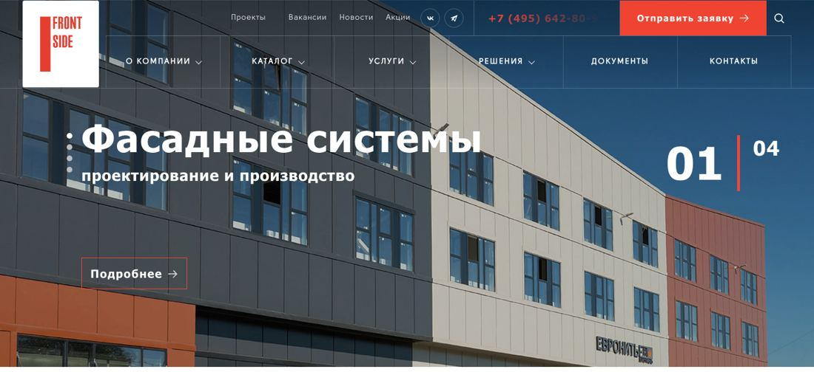
Основной шаблонСистемный шрифт, слайдер, двойная пагинация.
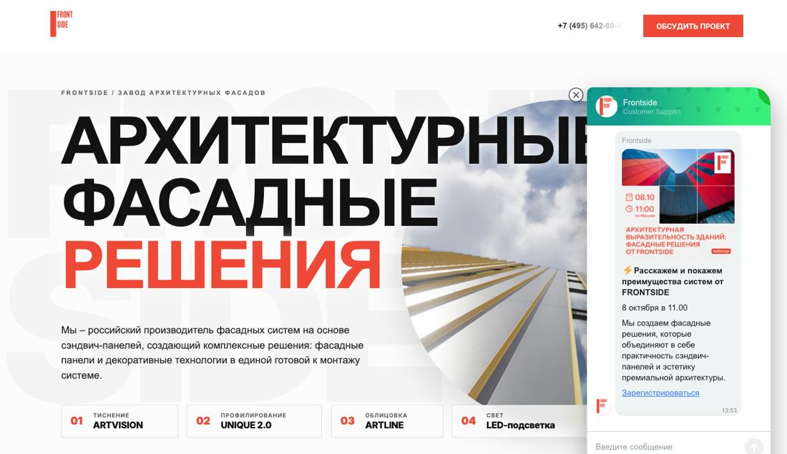
ЛендингДругой шрифт, сетка и кнопки. Сверху сам открылся чат.
1.2
Соответствие брендбуку
Сверка сайта с «Руководством по использованию бренда» FRONTSIDE 2025. Брендбук сделан под печать и офлайн-носители, цифровая среда в нём — только шаблон презентации. Правил для сайта в нём нет, поэтому часть расхождений — не нарушение, а пробел, который нужно закрыть.
PANTONE 179 C#EF4836
Black 30%#BBBDC0
PANTONE 663 C#F1F1F1
Black C#231F20
Элемент
Брендбук
На сайте
Статус
Логотип
Красный; на фото и цветном фоне — на белой подложке
Красный, на фото первого экрана — на белой подложке
Соответствует
Красный
#EF4836
#EF4836 основной, местами близкий #F04432
Почти
Чёрный
#231F20
#231F20 в тексте; #11161B в ряде блоков
Частично
Светло-серый
#F1F1F1
Фоны #F7F7F7 и #F1F3F5 — нефирменные оттенки
Частично
Серый 30%
#BBBDC0
Используется точечно
Частично
Нефирменные цвета
Не допускаются
Ярко-зелёный виджет чата на каждой странице
Расходится
Корпоративный шрифт
Segoe UI
Указан в заголовках, но виден только на Windows (Д2)
Частично
Рекламный шрифт
Wix Madefor Display
Не используется
Не применён
Основной текст
Только фирменные шрифты
Solomon — вне брендбука
Расходится
Модульная система
Плашки со скосом угла 45°, тонкие белые зазоры
Красные плашки в «Преимуществах» — прямоугольники без скосов, раскладка не модульная
Расходится
Паттерн
Сетка плашек с ромбами на стыках
Не используется
Не применён
Иконки
Линейные, только фирменные цвета, стрелки ↗ ↙ ↘
Стрелки → ↑ ↓ в разных стилях
Частично
Логотипы категорий
FRONTBASE, FRONTTOP, ARTLINE, UNIQUE, AESTHETIC в рамке
Не используются, названия набраны текстом
Не применён
Написание бренда
Само руководство пишет и FRONTSIDE, и Frontside
4 варианта на главной (Д7)
Нет правила
Вывод: сайт берёт из брендбука логотип, красный и чёрный, но не использует его главные графические идеи — модульные плашки со скосом и паттерн. Именно они отличают FRONTSIDE от других заводов, и их стоит сделать основой интерфейса (глава 3.1). В брендбук нужно добавить раздел «Сайт»: веб-шрифт, сетку, кнопки, правило написания бренда.
1.3
Что сохранить
Сильные стороны, на которые стоит опереться при развитии сайта.
Реальные объектыФото построенных зданий — главный актив. Их нужно показывать крупнее и в нормальном разрешении.
Единый шаблон продуктаВсе карточки устроены одинаково, в них легко встроить блок «Для проектировщика».
Раздел «Документы»Поиск, категории и «Открыть / Скачать» уже удобны. Не хватает наполнения BIM.
Логотип и фирменные цветаПрименяются правильно, в том числе белая подложка на фото.
Карта проектов и вебинарыРедкие для отрасли вещи, их стоит поднять выше в навигации.
Каждая находка описана одинаково: что видим, почему это плохо, что делаем. Коды (Д1, С3, Э2) используются в схемах, плане и сводной таблице.
Критично делаем первымВажно влияет на доверие и заявкиЖелательно полировка
2.1
Дизайн-система
Проблемы, которые видны на каждой странице. Их исправление даёт самый большой эффект на единицу работы.
Д1
Два визуальных языка на одном сайте
Критично
Что видим
Основной шаблон и лендинг «Архитектурные решения» — два разных дизайна: шрифт, шапка, подвал, кнопки, сетка. «Документы» и «Контакты» формально на основном шаблоне, но со своими табами, фильтрами и заголовками.
Почему важно
Переходя по меню, человек как будто попадает на другой сайт. Бренд не запоминается.
Что делаем
Одна дизайн-система и UI-кит. Лендинг — хороший ориентир по уровню; его подход стоит развить на основе брендбука.
Д2
Фирменные шрифты не доходят до пользователя
Критично
Брендбук
Два шрифта: Segoe UI — корпоративный (документы), Wix Madefor Display — для рекламных материалов. Других шрифтов нет.
Что видим
Заголовки на сайте заданы как Segoe UI, но шрифт не подключён к сайту: он есть только на Windows. На Mac его подменяет Tahoma, на iOS и Android — другие системные шрифты. Основной текст набран шрифтом Solomon, которого в брендбуке нет. Wix Madefor Display пока не используется. Размеры H2 — 28, 36, 40 и 60 px без системы.
Почему важно
На Mac, где работает заметная часть архитекторов, сайт выглядит не так, как задумано брендом. Текст и заголовки — из разных шрифтовых семей.
Что делаем
Для сайта взять Wix Madefor Display: он из брендбука, бесплатный, с кириллицей и подключается как веб-шрифт. Segoe UI — системный шрифт Windows, для встраивания на сайт нужна отдельная лицензия (уточнить у юриста). Solomon убрать. Задать единую шкалу размеров.
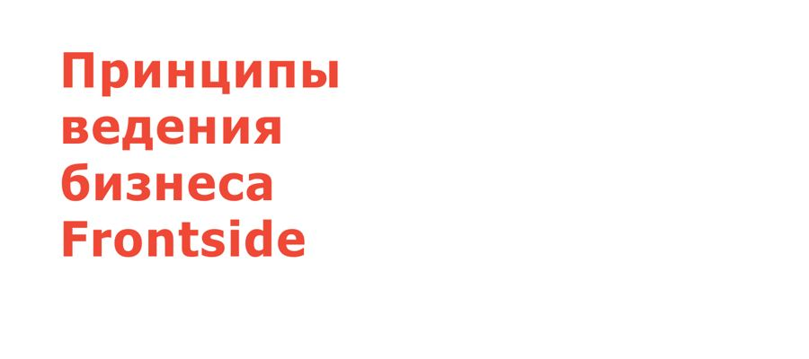
О компании · MacЗаголовок набран Tahoma вместо Segoe UI, красный 60 px — стиль, который больше нигде не встречается.Д3
Две разные шапки
Важно
Что видим
На 1920 у каталога и карточек продуктов шапка 120 px в узком контейнере, логотип на 305 px от края. У главной, «Проектов», «Услуг», «О компании» — 156 px во всю ширину, логотип на 110 px. На 1440 разница не видна.
Почему важно
При переходе между разделами шапка меняет размер и положение — пользователь воспринимает это как нестабильность интерфейса.
Что делаем
Один компонент шапки на общей сетке (см. схему 3.2-F).
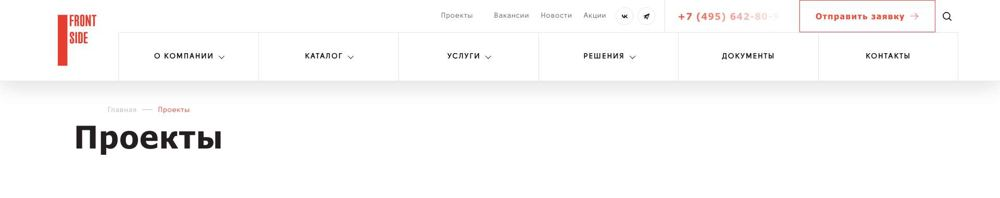
Проекты · 1920Логотип на 110 px.
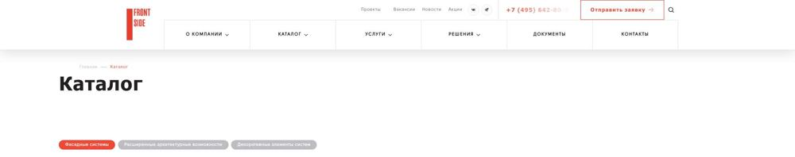
Каталог · 1920Логотип на 305 px, H1 левее логотипа.Д4
Единая сетка и поля
Важно
Что видим
Левый край H1 на 1440: 107 px (основной шаблон), 40 px («Документы», «Контакты»), 31 px (продукты), 112 px (лендинг). На 1920: 142, 60–80, 267 и 352 px. Хлебные крошки на всех проверенных страницах на 64 px правее H1.
Почему важно
На сайте сосуществуют четыре системы полей. Архитекторы, работающие с модульной сеткой, замечают такие расхождения в первую очередь.
Что делаем
12 колонок, один контейнер с фиксированными полями для всех шаблонов.
Д5
Единая система кнопок
Важно
Что видим
Основное действие бывает красной заливкой, красным контуром, красной ссылкой и чёрным контуром. «Отправить заявку» на главной залита, на внутренних — контурная.
Что делаем
Три уровня: основная, вторичная, ссылка. Цвета закрепить токенами.
Д6
Виджет чата выбивается из фирменного стиля
Важно
Что видим
Ярко-зелёная плашка «Напишите нам» на каждой странице поверх контента. На лендинге чат сам раскрывается с рекламой вебинара и закрывает полэкрана.
Что делаем
Цвета бренда, свёрнутая иконка, без автооткрытия.
Д7
Название и тексты
Важно
Что видим
Только на главной: Frontside, FRONTSIDE, Фронтсайд, ФРОНТСАЙД. Ошибки: «гибко реагировать требования» (нет «на»), «Скрольте вправо», заглавная после тире. Ответ на «Какие системы вы производите?» без единого названия системы. Тексты держатся на прилагательных («инновационные», «уникальные»).
Что делаем
Правило написания бренда, вычитка, ключевые тексты — языком фактов: размеры, сроки, допуски, объекты.
Д8
Аккордеоны устроены по-разному
Желательно
Что видим
На главной и в продуктах у открытого пункта ↓, у закрытых ↑ — наоборот принятому. На «Контактах» — «+».
Что делаем
Один компонент с «+ / −».
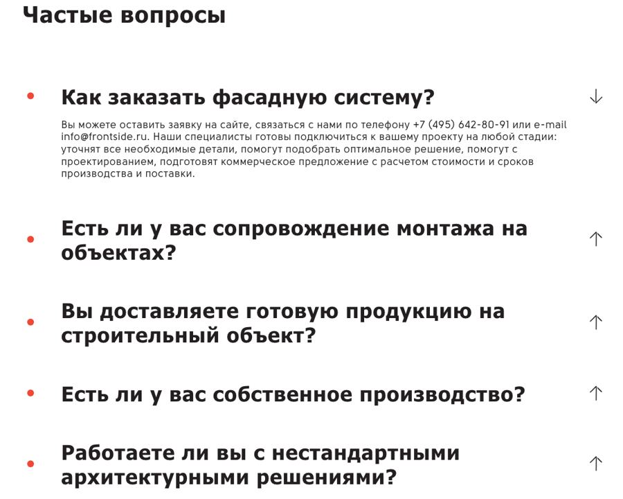
2.2
Страницы
В порядке важности для архитектора.
Шапка и навигация
С1
Телефон обрезан, «Проекты» вне главного меню
Критично
Что видим
Номер в шапке виден как «+7 (495) 642-80-…»: текст 256 px в блоке 198 px, на всех страницах и ширинах. «Проекты» стоят мелким серым текстом рядом с «Вакансиями» и «Акциями», в главном меню их нет. «Услуги» и «Решения» во многом дублируют друг друга. Соцсети в подвале: 3 на десктопе, 5 на мобильном.
Почему важно
Телефон — основной канал связи, и сейчас его сложно прочитать. Портфолио — то, с чего архитектор начинает знакомство с поставщиком.
Что делаем
Починить блок телефона (причину — вероятно, подмену номера коллтрекингом — проверит разработчик). Меню: Каталог · Проекты · Архитекторам · Услуги · О компании · Документы (схема 3.2-A).
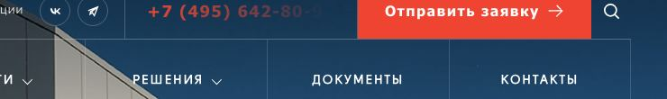
Главная
С2
Первый экран не раскрывает преимущества
Важно
Что видим
«Фасадные системы. Проектирование и производство» — формулировка точная, но не отличает компанию от других производителей. Слайдер из 4 экранов прячет новинки. Позиция показана дважды: точками и счётчиком «01 | 04». Кнопка «Подробнее» не говорит, куда ведёт.
Что делаем
Один экран: тезис про архитектурные возможности, крупное фото объекта с подписью (система, цвет), две кнопки — «Смотреть проекты» и «Обсудить проект» (схема 3.2-A).
С3
Коллаж «Преимущества»
Важно
Что видим
Пять красных плашек, пять фото и три узкие текстовые рамки без ясной логики. Сильные цифры (3000+ объектов, 15 млн м², с 2001 года) теряются. Блок повторяется на каждой карточке продукта.
Почему важно
Крупные красные плашки забирают внимание у фотографий фасадов — главного аргумента компании.
Что делаем
Строка из 4 фактов крупным шрифтом. С карточек продуктов блок убрать.
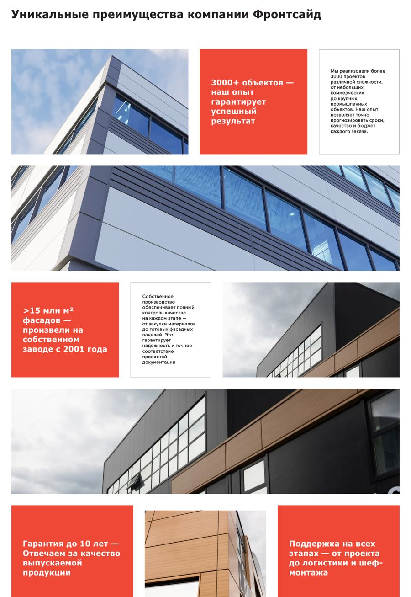
С4
Аккордеоны «Направления» и «Услуги»
Желательно
Что видим
Картинка слева не меняется при переключении пунктов, второй и третий пункты скрыты. На 1920 между картинкой и текстом около 450 px свободного пространства.
Что делаем
Направления — открытыми карточками, услуги — схемой этапов.
С5
21 документ на главной
Важно
Что видим
Карусель с одинаковыми обложками: ИНН, ОГРН, «Смена наименования», дважды одно и то же заключение. Проекты — слайдером «1 из 12».
Что делаем
3 ключевых документа + «Все документы». Проекты — сеткой 6 объектов с подписями систем.
С6
Форма заявки: длина и сценарий для архитектора
Желательно
Что видим
5 полей, файл и две галочки на полупрозрачном рендере с низким контрастом.
Что делаем
3 обязательных поля и переключатель «Я архитектор / застройщик / подрядчик».
Каталог и продукт
С7
Каталог: различия систем и место для акции
Желательно
Что видим
Баннер «UNIQUE BV — Выгодное предложение!» стоит пятой плиткой. Якорные чипы мелкие и серые. По плитке не понять, чем системы отличаются. На 1920 сетка держит 3 колонки, справа остаётся ~460 px свободного места.
Что делаем
Акцию — отдельной полосой, на плитку — 2–3 параметра-чипа, 4 колонки на широком экране.
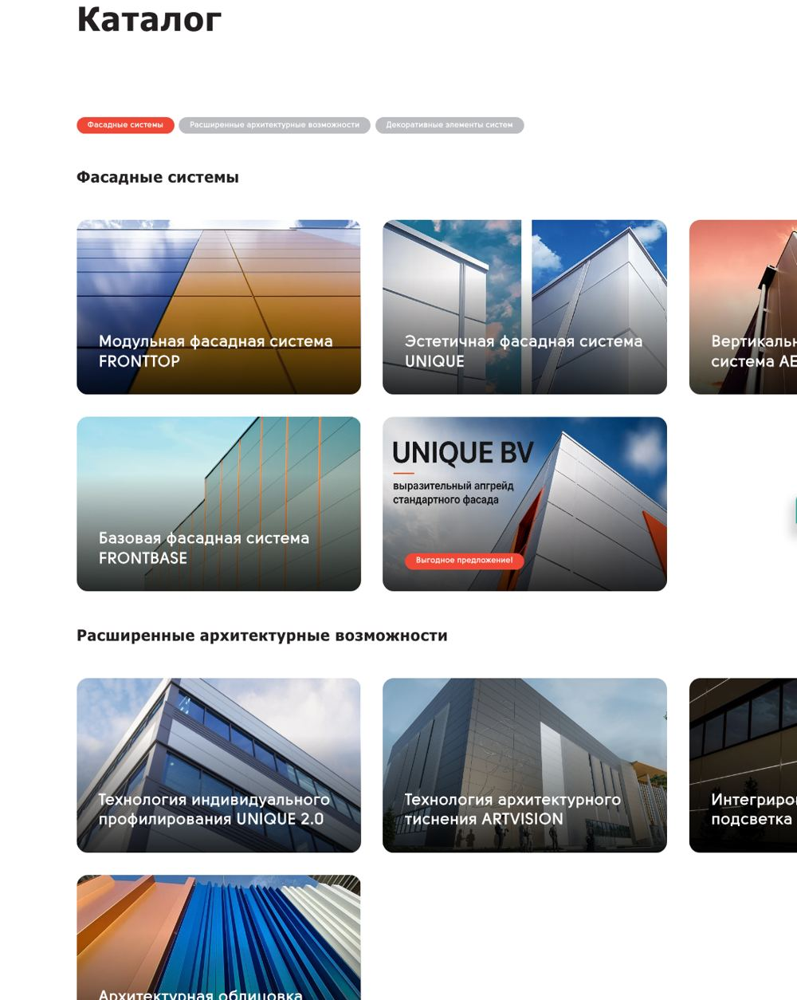
С8
Продукт: файлы для проектирования
Важно
Что видим
Характеристики — абзацами мелкого текста в табах. Нет BIM, DWG-узлов, техлиста, палитры, заказа образца. В «BIM-библиотеке» раздела «Документы» один файл. FAQ и «Преимущества» одинаковы на всех карточках.
Почему важно
Архитектор закладывает в проект того, чьи файлы у него под рукой.
Что делаем
Блок «Для проектировщика», таблица характеристик, проекты с этой системой (схема 3.2-B).
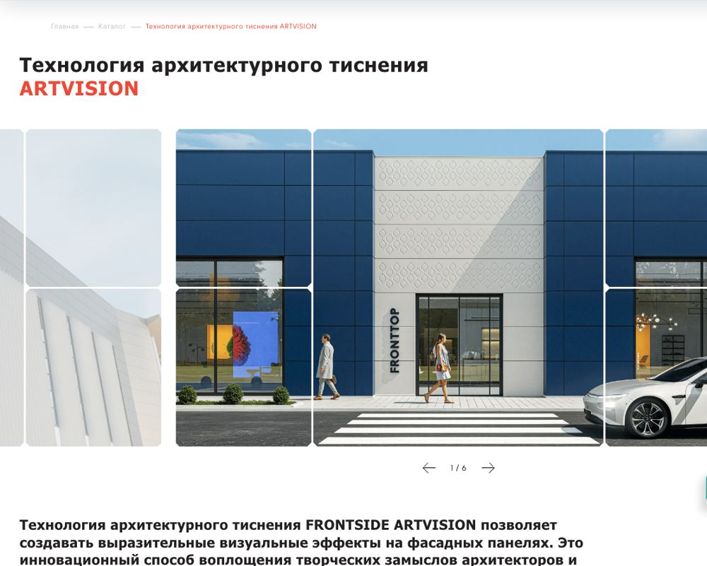
ARTVISIONГалерея без подписей.
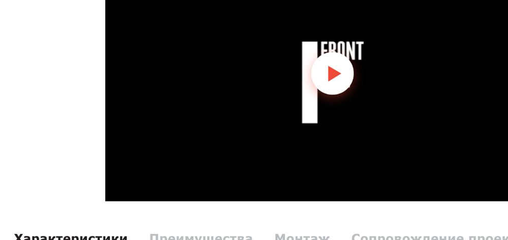
ХарактеристикиАбзацы вместо таблицы.
Проекты
С9
Портфолио не раскрывает потенциал проектов
Критично
Что видим
Превью по 480 px в две колонки, один фильтр «Все типы», около сотни проектов (оценка по пагинации) при заявленных 3000+. На 1920 первый проект видно только после прокрутки. В кейсе — локация и система, нет бюро, цвета, площади, года, узлов; заметная часть текста — цитата с открытия объекта, а не рассказ о фасадном решении; в конце ни действия, ни похожих проектов.
Что делаем
Галерея с фильтрами по системе, типу, цвету, региону. Кейс с паспортом объекта (схема 3.2-C).
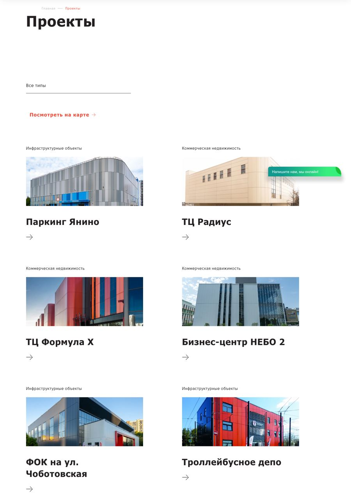
ПроектыМелкие превью.
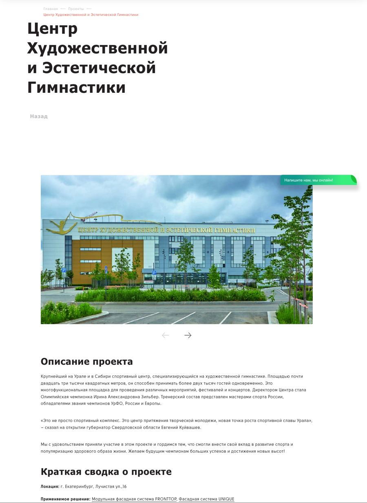
КейсНет паспорта и следующего шага.
Лендинг «Архитектурные решения»
С10
Нет перехода на основной сайт, заголовок перекрывает фото
Важно
Что видим
В шапке нет меню, поэтому с лендинга нельзя перейти в каталог или проекты. На 1920 «АРХИТЕКТУРНЫЕ» (120 px) заходит на круглое фото, фоновый водяной знак конкурирует с заголовком. «Скрольте вправо» — горизонтальная прокрутка каталога неочевидна без тачпада. На телефоне номер в шапке переносится на две строки.
Что делаем
Встроить в общий сайт как раздел «Архитекторам» (схема 3.2-D).
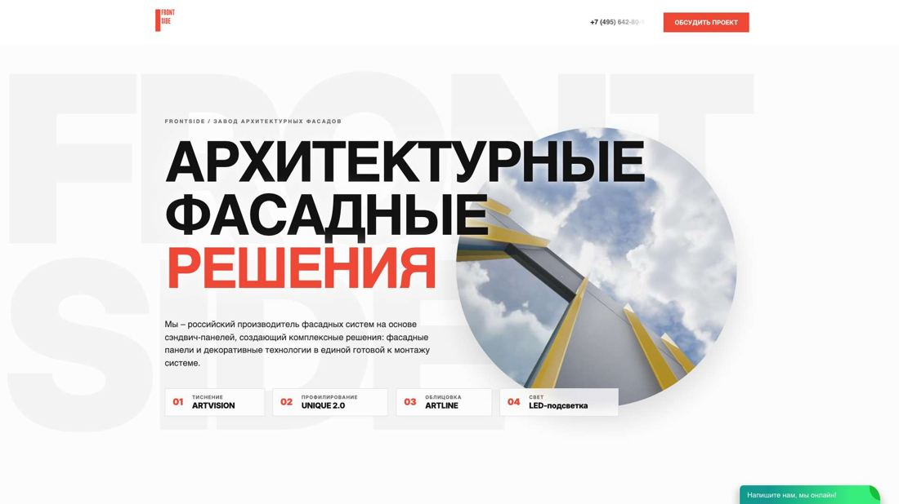
Остальные страницы
С11
Услуги, Решения, О компании
Желательно
Что видим
В «Услугах» абстрактные фото панелей вместо процесса; на 1920 первый экран — один заголовок. В «Решениях» H1 в 6 строк. «О компании» начинается со стены текста.
Что делаем
Услуги — схемой этапов с реальными фото, «О компании» + «Производство» — история завода с цифрами и видео цеха.
С12
Документы, Новости, Контакты
Желательно
Что видим
Документы: красный круг перекрывает название на обложке, обложки неразличимы. Новости: картинка только у первой. Контакты: светлый H2, свои табы, у 9 картинок нет alt, телефоны открываются только в аккордеоне.
Что делаем
Привести к общим компонентам, у новостей — обложки и теги.
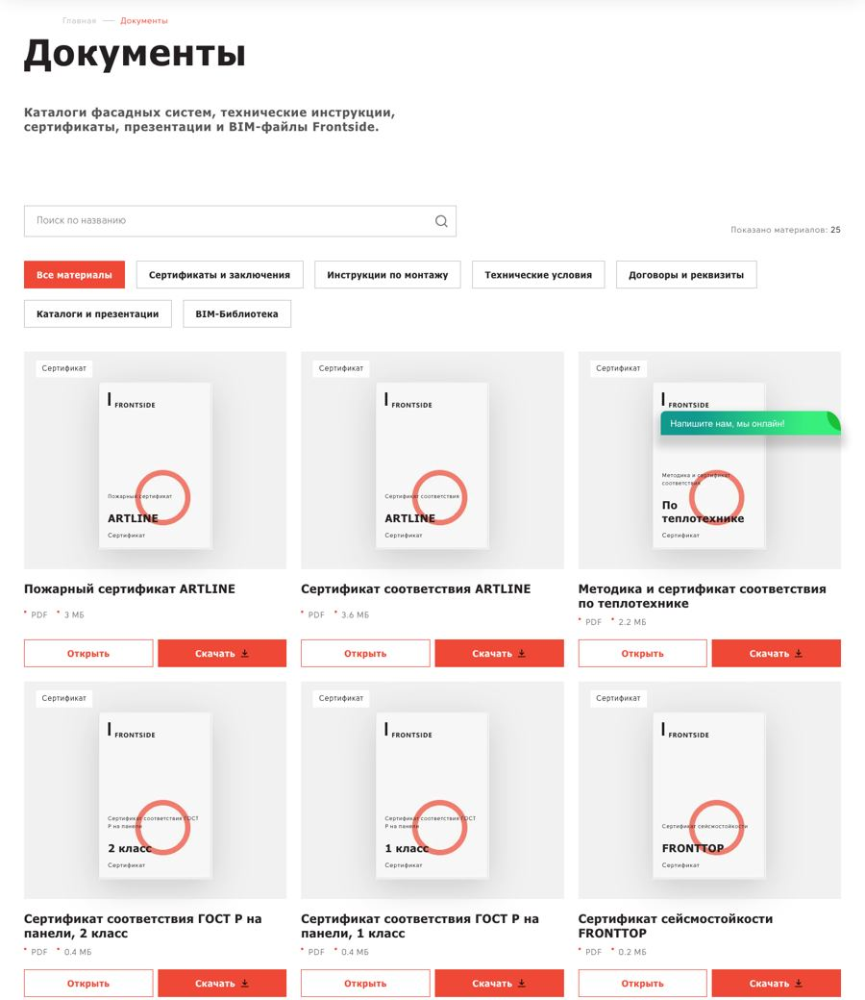
Документы
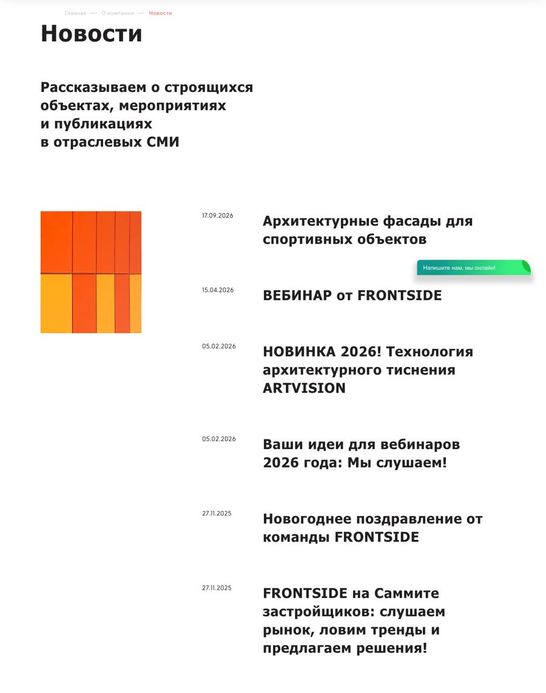
Новости
2.3
Экраны и скорость
Как сайт ведёт себя на 1920, 1440 и на телефоне (390 px).
1920 px
Э1
Фото растянуты сильнее исходника
Критично
Что видим
Фото первого экрана главной — файл 675 px, показан на 1920 (×2,8), на 1440 — ×2,1. Слайды проектов и фото в «Услугах» и «Решениях» растянуты в 1,4–1,6 раза.
Почему важно
Швы и фактура панелей размыты. Для компании, которая продаёт внешний вид фасада, качество изображений — первоочередная задача.
Что делаем
Исходники от 2560 px для полноэкранных кадров, 1600 px для остальных, srcset.
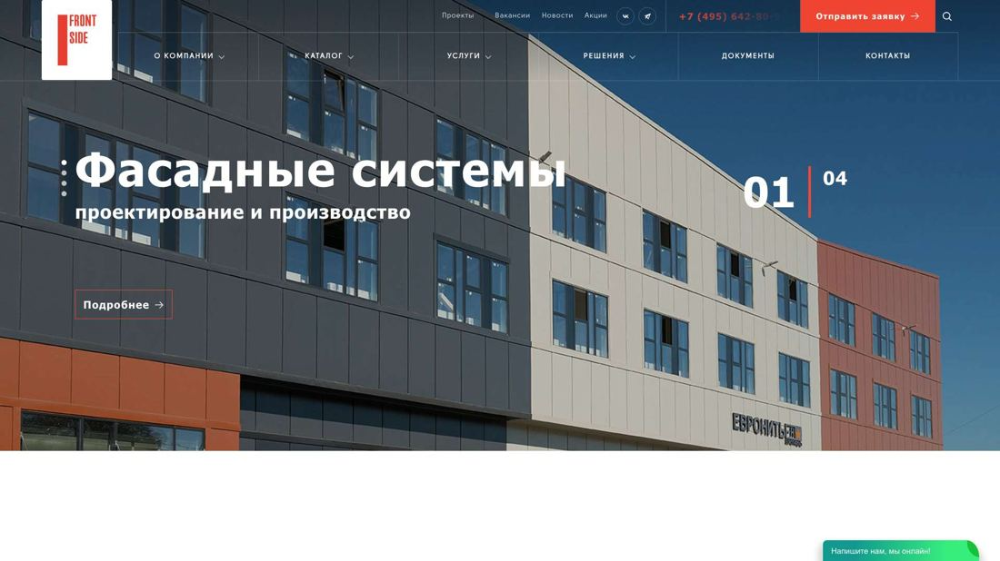
Главная · 1920×1080Растянутое фото, под ним свободная полоса ~200 px.Э2
Пропорции на широких экранах
Важно
Что видим
Контейнер растягивается до 1707 px, но блоки не перестроены: первые экраны «Услуг» и «Проектов» почти без контента, картинка и текст на главной далеко разнесены.
Что делаем
Ограничить ширину контента или перестроить сетку под широкий экран, сократить вертикальные отступы.
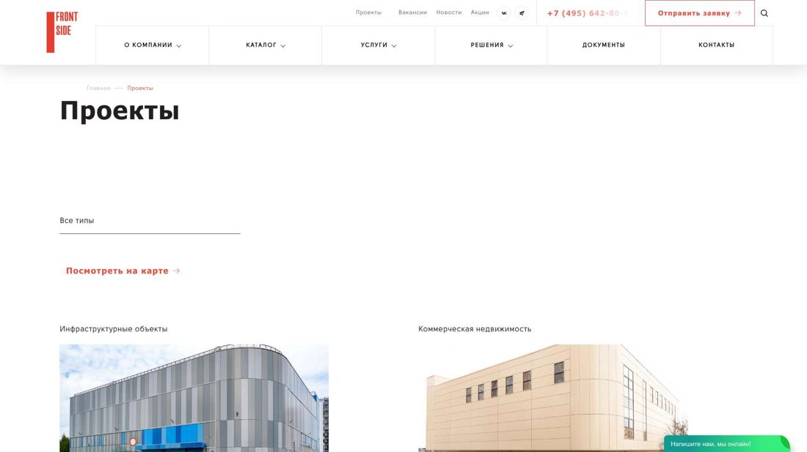
Проекты
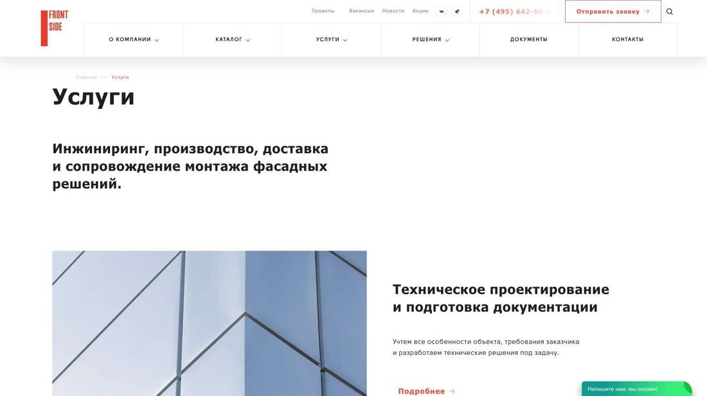
Услуги
1440 px
Э3
Главная шире окна на 20 px
Важно
Что видим
Активный слайд первого экрана выходит за край: на Windows с видимыми полосами прокрутки появится горизонтальный скролл.
Что делаем
Обрезать контейнер слайдера, проверить остальные слайдеры.
Телефон, 390 px
Э4
Страницы уезжают вбок
Критично
Что видим
Сильно шире экрана: «Решения → объект с требованиями к архитектуре» (607 px), «LED-подсветка» (548), «Проекты» (452). Слегка, на 4–14 px: «Документы», «Решения», «Новости», «Карта». Причины: слайдеры, ряд фильтров, пагинация.
Что делаем
Обрезать слайдеры, фильтры — в прокручиваемую полосу, автопроверка ширины на всех шаблонах.
Э5
Первый экран на телефоне
Критично
Что видим
Точки слайдера наезжают на заголовок, счётчик «01 | 04» висит посреди фасада, фото пережато с артефактами сжатия.
Что делаем
Отдельный мобильный кадр, без точек, одна кнопка (схема 3.2-E).
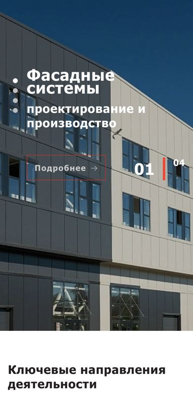
Главная
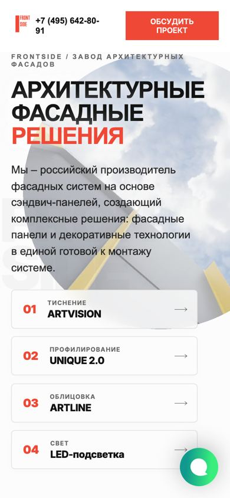
Лендинг
Скорость
Э6
Скорость загрузки
Важно
Что видим
Главная: 4,2 МБ (3 МБ картинок, 0,6 МБ скриптов), 61 запрос, главное изображение появляется через 5,2 с (норма Google — до 2,5 с). 7 сторонних доменов: метрики, чат, два коллтрекинга. Замер один, на десктопе.
Что делаем
srcset, отложенная загрузка ниже первого экрана, один коллтрекинг, чат по клику.
2.4
Доступность и право
Т1
Cookie-баннер без отказа
Важно
Что видим
Одна кнопка «Согласен». Метрика, коллтрекинг и чат грузятся до согласия.
Что делаем
Согласовать с юристом (похоже на риск по 152-ФЗ), добавить отказ или настройки.
Т2
Изображения без alt
Желательно
Что видим
9 на «Контактах», 6 на «О компании», по 2–3 на карточках продуктов.
Что делаем
Заполнить alt в шаблонах и в админке.
Аудит сайта frontside.ru Проблемы
Часть 3
Предложение
Что мы предлагаем сделать: принципы, схемы ключевых страниц и план работ.
3.1
Принципы
Модули из брендбука — основа интерфейсаКарточки, кадры фото, плашки с заголовками и кнопки со скосом угла 45°, тонкие белые зазоры между модулями.
Паттерн как фон разделовСерая сетка с ромбами на стыках — для разделителей, пустых состояний, подложек под логотипом.
Wix Madefor Display как веб-шрифтОдин фирменный шрифт для заголовков и текста, единая шкала размеров.
Логотипы категорий в каталогеFRONTBASE, FRONTTOP, ARTLINE, UNIQUE, AESTHETIC — как в брендбуке. Для ARTVISION и LED их нужно разработать.
Фасад — главный геройКрупные фото в полном разрешении, подпись «объект · система · цвет» под каждым кадром.
Факты и инструментыМиллиметры, RAL, сроки вместо эпитетов. BIM, узлы, палитры и образцы — в один клик.
3.2
Схемы страниц
Схемы показывают структуру и приоритеты блоков, а не финальный визуал: шрифты, цвета и фото будут в дизайн-концепции. Цифры и характеристики взяты с текущего сайта. Номера в красных кружках расшифрованы под каждой схемой.
A. Главная
Решает С1, С2, С3, С5, С6, Э1. Сначала объекты и смысл, потом доказательства и путь архитектора.
Сверка с брендбуком сделана по PDF «2025_FrontSide_BB». Шрифты, цвета, положения элементов, ширина страниц, размеры исходников фото, файлы без alt — сняты из кода страниц в браузере. Скорость измерена один раз на десктопе; для надёжной цифры нужны PageSpeed и данные реальных пользователей.
Экспертная оценка
Мнение
Баллы, приоритеты, оценки новизны и выразительности, схемы и рекомендации. Аналитики, конверсий, записей сессий и интервью с архитекторами у нас не было — приоритеты стоит сверить с метриками клиента.
Не проверено
Пробелы
Ширины 1024, 1280, 1536 и 2560 px, настоящий Safari на iPhone, отправка форм, контраст по WCAG, SEO, поиск и карта. «Производство», «Вакансии», «Карта проектов» и часть карточек продуктов просмотрены бегло. Причина обрезанного телефона, происхождение фото и точное число проектов — не проверены.